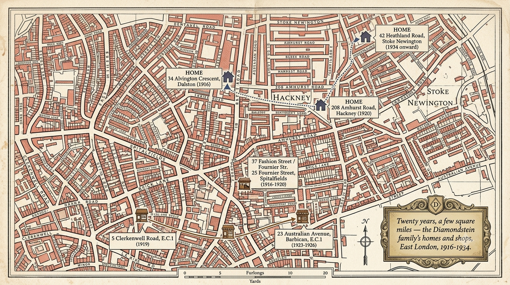

c.1880
Born in Korsovka, Latvia
1901
Emigrates alone to Montreal
1907
The Panic of 1907 wipes out his workhistorical context
1908
Gives up on Montreal for London, for good
1911
Marries Dora
1913–23
Has three daughters: Gladys, Beatrice, Cynthia
1916
Develops his own fur business
1919–26
Sends his family to the coast every summer
1916–30s
Business and residence steadily move up the ladder
1978–Today
Sam and Dora die (1978, 1984); four more generations follow, down to the great-grandson who recovers these letters and builds this project

Before the Letters · 1880s–1900s
The Scattering
Before there's a "Sam and Dora" story, there's a much bigger one: David and Keila-Tsirel's ten children, scattering out of the Latvian-Lithuanian Pale in every direction — to Montreal, to London, to South Africa, to Palestine. Sam and Dora's letters are really just the surviving fragment of that much larger diaspora. This map is the reason the correspondence exists at all: once a family scatters this widely, letters stop being a nicety and become the only way anyone stays a family.

The Courtship · 1901
Emigration
In 1901 Sam left Korsovka alone, around eighteen to twenty-one, for Montreal — the route ran overland to a Channel port, then steerage across the Atlantic on one of the emigrant lines running Europe to Canada. He and Dora were already cousins who'd grown up together; from this point on, for a decade, everything between them happens on paper. This is the first map in the story because it's the one that turns them into letter-writers.

The Courtship · 1901–1908
Back and Forth
Montreal didn't stick the first time, or the second. Sam crossed back and forth across the Atlantic more than once in this decade, chasing work, each attempt undone by the same thing: the Panic of 1907 gutted whatever he'd built. By 1908 he gave up on Canada for good and went to London instead — the decision that actually determines the rest of the story, made only after Montreal had failed him twice.

The War Years · 1908–1930s
London
London is where Sam and Dora actually build their life: married in 1911, three daughters by 1923, and a fur business Sam develops himself from 1916 onward. The map of their addresses over these two decades is really a map of that business's slow climb — each move up the ladder shows up as a better postcode.

The Travelling Years · 1916–1930s
The Fur Trade
Once the business is established, Sam is on the road constantly — the London fur trade ran on buying trips out to the Continent and selling trips around Britain's coastal resort towns, where the seasonal money was. This map and the family's own summers at the coast are the same story seen from two sides: he travels for the furs, and sends Dora and the girls to the seaside on what that travel earns.